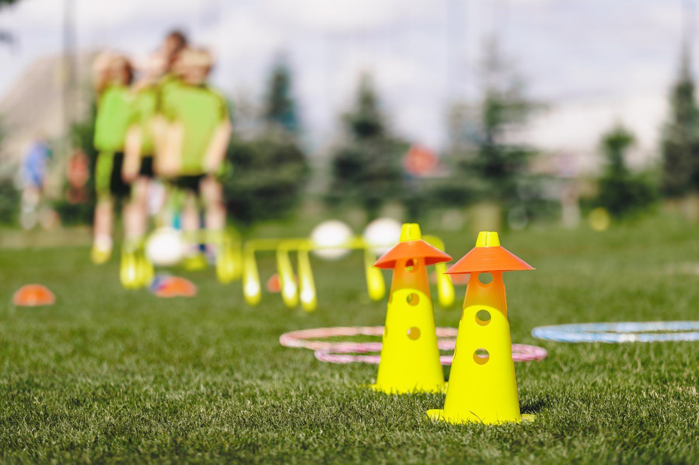

Picture the scene. The athlete has completed months of rehabilitation. Their strength tests look good. The clinician is satisfied. The words they have been waiting for finally arrive: “You’re cleared.”
Then training starts.
The warm-up is fine. The controlled drill is fine. But when another player closes space, the athlete hesitates. Their attention shifts from the play to the previously injured part of their body. A movement that used to happen automatically now feels like a negotiation.
On paper, they are back. In practice, part of them is still standing at the door.
In When Pain Stays Hidden, I explored why athletes can find it difficult to disclose pain and ask for help. This article follows that story forward. What happens after the injury has been reported, assessed and rehabilitated—when the body has met important criteria, but the athlete does not yet trust it under speed, fatigue, contact or pressure?
“Return to sport” hides three different returns
We often talk about return to sport as though it is one event: injured on one side, cleared on the other. That language is tidy. Recovery usually is not.
An international consensus group proposed a more useful continuum (Ardern et al., 2016):
- Return to participation: The athlete is training or taking part in modified sport, but not yet fully returned.
- Return to sport: The athlete is back in their sport, although they may not be performing at their previous level.
- Return to performance: The athlete is performing at or beyond the level they are aiming for.
These stages can overlap, stall or move backwards temporarily. An athlete might complete a controlled training session and still freeze during an unpredictable contest. They might be available for selection but avoid a tackle, landing, sprint or change of direction that reminds them of the injury.
This does not automatically mean the medical decision was wrong. It means physical capacity and psychological readiness are connected without being identical.
That distinction matters because “cleared” can accidentally sound like “finished”. The athlete may then interpret normal hesitation as personal failure. Coaches may see caution as poor commitment. Everyone becomes frustrated with a problem that was never clearly named.
Fear of reinjury is not a character flaw
Fear after injury can be inconvenient, but it is not irrational simply because rehabilitation has progressed and return has been medically approved.
The athlete has learnt—sometimes in one sharp, memorable moment—that a familiar movement can have serious consequences. Their body may be stronger now, yet the nervous system still has a fairly convincing receipt from last time.
Psychological readiness is broader than feeling confident. It can include emotion, appraisal of risk, trust in the injured area, motivation, attention and willingness to perform meaningful sport-specific actions. Social support, communication, identity and the wider rehabilitation environment can also shape recovery across its different stages (Truong et al., 2020).
Some caution is useful. It can keep an athlete within an agreed progression and encourage them to report symptoms. The problem is not the presence of fear itself. The problem is when fear is ignored, treated as weakness or allowed to make every decision without being examined.
It is also important not to psychologise genuine physical warning signs. New pain, instability, swelling, neurological symptoms or an unexpected loss of function belong back with the relevant medical or rehabilitation professional. “Work on your mindset” is not an acceptable substitute for clinical reassessment.
What the research actually tells us
A 2025 systematic review brought together 62 studies using psychological-readiness measures after sports injury. Across the included studies, readiness scores were associated with—and in some designs helped predict—physical recovery, return-to-sport behaviour, injury-related quality of life, reinjury outcomes and post-return activity or performance (Liu & Noh, 2025).
That sounds compelling, and it is useful. It is not the same as saying a questionnaire can decide whether somebody should play.
Much of the evidence concerns anterior cruciate ligament reconstruction. The measures are usually self-reported, and scores can be shaped by pressure to return, overconfidence, sport type and the athlete’s circumstances. The review’s authors cautioned against relying on a single cut-off score. A readiness measure is better used to begin a conversation than to deliver a verdict (Liu & Noh, 2025).
The intervention evidence is similarly nuanced. A 2026 meta-analysis of 11 randomised trials involving 440 people after ACL reconstruction found preliminary evidence that psychological interventions may improve pain, fear of movement, knee self-efficacy and some patient-reported outcomes. However, they did not produce a significant improvement in the included psychological-readiness measure, knee strength or mental wellbeing, and the studies used varied approaches (Zhang et al., 2026).
An especially useful reality check comes from the BAck iN the Game trial. In this study, 161 athletes aged 15 to 30 who intended to return to pivoting sports received either usual rehabilitation or usual rehabilitation plus a 24-week self-directed digital psychological-support programme. At 12 months, 36% of athletes in each group had returned to sport, with no statistically significant between-group differences in return rates, functional or psychological outcomes, or subsequent ACL injuries (Fältström et al., 2026).
That result does not make psychology irrelevant. It makes the target of psychology larger.
Psychological readiness appears to matter, but it is not a button we can press with a single self-directed programme. Support may need to be individualised, timed to the athlete’s actual barriers and integrated with physical rehabilitation and sporting exposure. A person can also benefit through reduced fear, greater understanding or better engagement without that automatically translating into return to competition at a fixed date.
Good sport psychology should be able to tolerate that kind of finding. Otherwise, we are selling confidence rather than understanding recovery.
The athlete is not the whole system
Sport psychology often inherits the same temptation as the rest of performance sport: find the variable inside the athlete, measure it, then design a programme to change it. That work can be valuable. It can also make the problem smaller than it really is.
We can deliver the programme, teach the psychological skills and put athletes through the PowerPoint. But what happens when they leave the room?

An athlete may understand fear perfectly well and still return to a setting where hesitation is interpreted as weakness, selection consequences remain unclear, staff give conflicting messages, or reporting a symptom feels risky. In that environment, another worksheet may be technically defensible and practically beside the point.
This is where an ecological view becomes useful. It asks us to look at the interaction between the athlete and the environment around them rather than locating readiness entirely inside one person.
A scoping review of 77 studies involving sport-related knee injuries found that psychological, social and contextual factors were present across the acute, rehabilitation and return-to-sport stages. Athletes’ experiences were individual, changed over time and were shaped by factors such as autonomy, social support and communication (Truong et al., 2020).
More recent sport research points in the same direction, although it does not directly test return from injury. A 2025 socio-ecological scoping review identified 13 possible antecedents of psychological safety spread across intrapersonal, interpersonal, organisational or programme, and wider environmental levels. Importantly, only nine studies met its inclusion criteria, so this is a developing evidence base rather than a settled formula (Kotani et al., 2025).
Likewise, a qualitative study involving 13 stakeholders in Danish high-performance sport identified seven interconnected features they perceived as supporting athlete thriving. These included psychological safety and compassion, a whole-person focus, transparent communication, collaboration, and alignment between immediate performance demands and longer-term development (Schlawe et al., 2026).
Neither study proves that improving a team’s culture will cause more athletes to return successfully after injury. They do support a practical proposition: psychological work is likely to be limited when the environment repeatedly contradicts it.
Psychological safety here does not mean lowering standards, removing difficult conversations or making training comfortable. It means an athlete can report symptoms, voice uncertainty, ask a question and make an imperfect first attempt without avoidable humiliation or punishment.
This changes the question from “How do we make this athlete feel ready?” to:
What needs to change in the athlete, the task, the relationships and the wider system so that readiness can develop—and be expressed—in the place performance actually happens?
Trust is built from credible evidence
Telling an athlete “you’re fine” may offer brief reassurance. It rarely answers the question underneath:
Can I do the thing that matters, in the conditions where I need to do it?
Trust tends to become more believable when the athlete gathers evidence through appropriately graded experience. The exact progression must be developed with the professionals responsible for the injury, but the psychological logic is straightforward: make the feared demand specific, practise a manageable version, notice what happens, and gradually increase the realism.
Research used to develop psychological support for injured athletes has highlighted several recurring needs: understanding the injury, setting realistic goals, receiving regular feedback, maintaining support and identity, and learning strategies for fear, anxiety and motivation (Ardern et al., 2022).
The practical point is that confidence should not be treated as an entry requirement. It can be an outcome of well-designed practice.
A return-to-performance ladder
Before you use this: this tool is not a validated assessment, clearance test or rehabilitation protocol. It is an evidence-informed practical synthesis: a conversation aid to use alongside the athlete’s medical and physical plan.
1. Name the exact demand
“Playing again” is too vague. What is the moment that carries the most uncertainty?
It might be:
- cutting sharply off the repaired leg;
- landing in traffic;
- accelerating at full effort;
- entering a tackle;
- bowling at match intensity;
- competing when fatigued;
- being watched during the first game back.
Specific fear is workable. A general sense of “I’m just not ready” is harder to test.
2. Separate danger from discomfort
Ask the rehabilitation professional what physical signs should stop or change the session. Then distinguish those signs from the understandable discomfort of trying something that has become threatening.
This creates two useful plans: one for genuine symptoms and one for mental noise. The athlete does not have to guess which rule applies while under pressure.
3. Build the next credible step
Work with the rehabilitation team to create a version of the demand that is challenging enough to matter but controlled enough to complete safely.
A progression might change one variable at a time: speed, direction, fatigue, contact, uncertainty, competitive consequence or number of repetitions. The goal is not to prove bravery. It is to collect accurate evidence.
4. Predict, perform and review
Before the attempt, ask:
- What do I expect will happen?
- How strongly do I believe that?
- What will I pay attention to?
Afterwards, ask:
- What actually happened?
- What did my body demonstrate?
- What remains uncertain?
- What is the next useful step?
This prevents the loudest anxious prediction from becoming the only record of the session.
5. Repeat until trust becomes portable
A controlled success is encouraging. Return to performance asks whether the skill holds under changing conditions.
The athlete may need evidence across different speeds, opponents, surfaces, fatigue levels and pressure. Progress is less about forcing a particular feeling and more about expanding what the athlete can do while thoughts and sensations come along for the ride.
6. Check what the environment is teaching
If hesitation appears, do not ask only what psychological skill the athlete is missing. Check the messages and consequences around them.
- Are the coach, clinician, physiotherapist, strength and conditioning coach, and sport-psychology practitioner working from a shared understanding of the progression?
- Can the athlete report pain, fear or uncertainty without immediately worrying about selection, status or judgement?
- Do training tasks recreate the decision-making, contact, fatigue and uncertainty of competition?
- Is the athlete receiving compatible feedback, or five professional opinions that make sense separately and collide when placed together?
The point is not to remove all pressure. It is to make the return process coherent enough that the athlete can learn from it.
What coaches and performance leaders can do
A coach does not need to treat the injury to influence the return environment. A head of sport or head of performance does not need to deliver therapy to take responsibility for how psychology is being used.
First, clarify which return you are discussing. “Back training” and “ready to perform for 80 minutes” are different claims.
Second, ask about the task rather than judging the emotion. Instead of:
“The physio cleared you, so you need to trust it.”
“Which part of today’s session feels least trusted, and what progression has your rehabilitation team agreed?”
Third, grade uncertainty as well as physical intensity. A drill can be physically demanding but psychologically predictable. Competition adds opponents, decisions, mistakes and consequences. Those demands may need deliberate reintroduction.
Fourth, keep the athlete connected while their role changes. Recovery is shaped not only by exercises but by relationships, identity and the sense that the athlete still belongs (Ardern et al., 2022; Truong et al., 2020). Inclusion does not require pretending they are ready. It means they do not have to earn their place in the group again from scratch.
For performance leaders, the wider responsibility is integration. Psychology should inform rehabilitation planning, training design, communication and staff decision-making—not sit in a separate room and hope the athlete carries it back into an unchanged system.
Useful questions include:
- Where does psychological readiness appear in our return plan?
- Who is responsible for noticing and discussing it?
- Are our medical, physical, coaching and psychological messages aligned?
- What happens in practice when an athlete reports fear or a symptom?
- Are we adapting the environment as carefully as we are asking the athlete to adapt?
That is often the more honest audit of how sport psychology is being applied.
Readiness is information, not a moral judgement
Some athletes will feel eager before their body is ready. Others will meet physical criteria and still feel cautious. Neither position tells us, by itself, whether somebody is mentally strong.
A useful return decision brings several forms of evidence together: tissue healing, symptoms, physical capacity, sport-specific demands, psychological readiness, the athlete’s goals, the performance environment and the judgement of the relevant professionals. The balance will differ across injuries and sports. Most current psychological-readiness research still comes from knee injuries, so broader claims should remain cautious (Liu & Noh, 2025).
If fear, distress or avoidance remains intense, persistent or difficult to shift, more individualised support from a suitably qualified sport-psychology or mental-health professional may help. That support should complement medical care and physical rehabilitation, not compete with them. At the same time, practitioners and performance leaders should check whether the environment is supporting the very behaviours being asked of the athlete.
Medical clearance can open the door. Individual psychological work can help the athlete approach it. But whether they can move through it with honesty, trust and freedom is also shaped by what is waiting on the other side.
If you are supporting an athlete through a return to sport, or you are the one who has been cleared and still does not trust it, this is exactly the sort of thing we work on. Have a look at our Approach to see how we do it, or get in touch for a kōrero about where you are at.
References
Ardern, C. L., Glasgow, P., Schneiders, A., Witvrouw, E., Clarsen, B., Cools, A., Gojanovic, B., Griffin, S., Khan, K. M., Moksnes, H., Mutch, S. A., Phillips, N., Reurink, G., Sadler, R., Grävare Silbernagel, K., Thorborg, K., Wangensteen, A., Wilk, K. E., & Bizzini, M. (2016). 2016 consensus statement on return to sport from the First World Congress in Sports Physical Therapy, Bern. British Journal of Sports Medicine, 50(14), 853–864. https://doi.org/10.1136/bjsports-2016-096278
Ardern, C. L., Hooper, N., O’Halloran, P., Webster, K. E., & Kvist, J. (2022). A psychological support intervention to help injured athletes “get back in the game”: Design and development study. JMIR Formative Research, 6(8), e28851. https://doi.org/10.2196/28851
Fältström, A., Hedevik, H., Ardern, C. L., & Kvist, J. (2026). Adding self-directed psychological support to usual rehabilitation following anterior cruciate ligament reconstruction did not increase return-to-sport rates at 12 months. Results from the BAck iN the Game (BANG) randomized controlled trial. Journal of Orthopaedic & Sports Physical Therapy, 56(5), 310–320. https://doi.org/10.2519/jospt.2026.13749
Kotani, Y., Sato, Y., & Shirasaka, S. (2025). Coaching for psychological safety: A socio-ecological scoping review of antecedents in competitive sport. International Journal of Sports Science & Coaching, 20(6), 2693–2708. https://doi.org/10.1177/17479541251368660
Liu, S., & Noh, Y.-E. (2025). The utility of psychological readiness scales in predicting return to sport: A systematic review. BMC Psychology, 13(1), Article 1213. https://doi.org/10.1186/s40359-025-03378-5
Schlawe, A., Christiansen, A. V., & Henriksen, K. (2026). Features of successful high-performance sport environments: Stakeholder insights. Journal of Applied Sport Psychology. Advance online publication. https://doi.org/10.1080/10413200.2026.2683956
Truong, L. K., Mosewich, A. D., Holt, C. J., Le, C. Y., Miciak, M., & Whittaker, J. L. (2020). Psychological, social and contextual factors across recovery stages following a sport-related knee injury: A scoping review. British Journal of Sports Medicine, 54(19), 1149–1156. https://doi.org/10.1136/bjsports-2019-101206
Zhang, M., Li, B., Tian, J., Huang, Y., & Pu, X. (2026). The effectiveness of psychological interventions for patients undergoing anterior cruciate ligament reconstruction: A meta-analysis and systematic review. Journal of Clinical Medicine, 15(10), Article 3980. https://doi.org/10.3390/jcm15103980